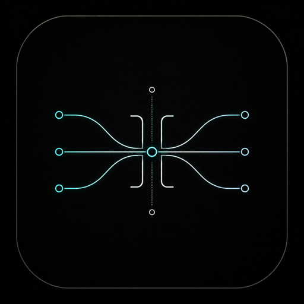

THE GLUE
Bus compression, done right
A feed-forward VCA compressor in the spirit of the SSL G-series — the sound that holds a mix together. Subtle, cohesive gain movement that makes a busy arrangement feel like one performance.

The compressor that does what its name says: it glues a mix together. An SSL G-series-style bus compressor with a clean VCA core, program-dependent release and the mastering essentials — gentle, musical gain riding across the whole stereo image, on your mix bus or master.
Glue is a paid, closed-source SHLabs plugin in active development. Follow SHLabs for the release.
A feed-forward VCA compressor in the spirit of the SSL G-series — the sound that holds a mix together. Subtle, cohesive gain movement that makes a busy arrangement feel like one performance.
The classic stepped ratio, attack and release, plus an Auto release that adapts to the music — brief peaks recover fast, sustained passages breathe slowly.
A high-pass on the detector keeps kick and bass from triggering the whole bus, so the compression follows the music instead of riding the sub. The single most important control for mastering glue.
Switch the detector into Mid/Side and compress the centre and the stereo sides independently — tighten the middle without squashing the width, or vice versa. Adjustable stereo link from dual-mono to fully linked.
A wet/dry Mix control for parallel compression — slam the compressed path and dial it back under the dry signal for density and punch without losing the transients.
A large gain-reduction meter anchors the panel, flanked by input and output levels, with a soft knee, makeup and an auto-gain option so the level stays matched while you dial in the feel.
Glue is one half of the SHLabs mastering pair — the dynamics to its sibling Stesso's tone. The same design ethos as the rest of the catalog (expressive, playable, math you can hear), pointed at the master bus. It runs as an insert on any track and glues whatever passes through it.
A paid, closed-source plugin in active development. This page is an early look; pricing and availability will be announced when it ships. Follow SHLabs to hear when it lands.